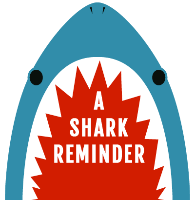
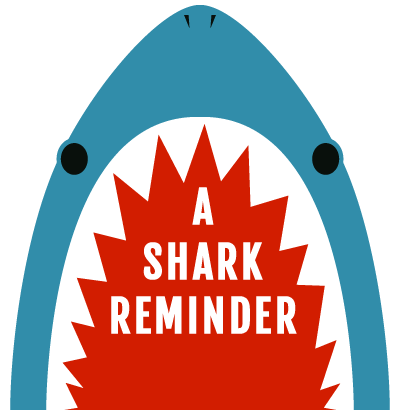

"Sharks are beautiful animals, and if you're lucky enough to see lots of them, that means that you're in a healthy ocean. You should be afraid if you are in the ocean and don't see sharks."
Sylvia Earle
Whale sharks are the world’s largest living fish. They are filter feeders, and feed on plankton including copepods, krill, fish eggs, crab larvae and small nektonic life, such as small squid or fish. Hundreds of these gentle giants are slaughtered every year for their liver oil and meat.
All shark species constantly shed and replace their teeth. Some lose up to 35,000 in a lifetime.
In 1996, 198842 people were injured by nails, screws, tacks, and bolts; only 13 people were injured by a shark.
Growing to just 15 centimeters long, the smalleye pygmy is among the world's smallest sharks. In its deep, open-ocean habitat, it uses bioluminescence on its belly to camouflage itself. When seen from underneath, it’s belly matches the bluish light coming from the surface, it’s grey top matches the dark depths below.
Cows are responsible for more human fatalities than sharks.
“Remove the predators, and the whole ecosystem begins to crash like a house of cards. As the sharks disappear, the predator-prey balance dramatically shifts, and the health of our oceans declines.“
Brian Skerry
The health of the ocean is key to the health of life on earth. It regulates the climate, feeds millions of people every year, produces most of the oxygen we breathe, is the home to an incredible array of wildlife, provides us with important medicines, and so much more! In order to ensure the health and safety of our communities and future generations, it’s imperative that we take the responsibility to care for the ocean as it cares for us.
Most sharks serve as top predators of the marine food pyramid, playing a critical role in our ocean ecosystems. Directly or indirectly, they regulate the natural balance of these ecosystems, and are an integral part of them.
Predatory sharks prey on the sick and the weak members of their prey populations, and some also scavenge the sea floor to feed on dead carcasses. By removing the sick and the weak, they prevent the spread of disease and prevent outbreaks that could be devastating. Preying on the weakest individuals also strengthens the gene pools of the prey species. Since the largest, strongest, and healthiest fish generally reproduce in greater numbers, the outcome is larger numbers of healthier fish.
Sharks also intimidate and eat prey species, regulating their behaviour and preventing over consumption and over grazing. This allows species down the food chain to maintain a healthy population.
An example of this is at shark bay, in western australia. Tiger sharks moderate the numbers of dugongs and turtles, which feed on seagrass populations. Many fish species use the sea grass to lay their eggs in. Removal of the tiger shark would mean over feeding of the seagrass, which would mean the fish populations would decrease. This has a direct effect on the fishing industry.
Shark net programs have a significant environmental cost. Other marine animals (turtles, fishes, dugongs, etc) and non-target shark species are killed in the nets, including protected and endangered species. Many sharks drown every year after becoming entangled in nets intended for other species.
Overfishing is one of the most serious issues facing shark populations today. Shark populations take a long time to recover from overfishing. They grow very slowly and take a long time to reach sexual maturity – 20 years or more in some species. When they do reproduce, they produce very few offspring compared to other food fish species.
Millions of sharks die every year after being caught by means intended to catch other fish, especially on longlines intended for tuna and swordfish. While by-catch of other species such as dolphins has declined after highly publicised campaigns to protect them, the undeserved negative reputation of sharks is slowing down efforts to protect them from this wasteful and destructive practice.
A huge industry is developing around the use of shark products for improving human health, despite the lack of good scientific evidence to support it. Oil extracted from the livers of sharks is becoming increasingly popular as a booster for the immune system and even as a way of preventing cancer, thanks to an erroneous belief that sharks don’t suffer from cancerous tumors. Shark cartilage is harvested for the same reason.
Finning is a destructive and wasteful practice that involves catching a shark, cutting off its fins and discarding the rest of the animal, which is often thrown back into the water to die. Shark fins are considered a delicacy in some parts of the world, notably East Asia. Fishermen remove the fins and toss the live shark back into the sea to die an agonizing death. Unable to swim, they sink to the bottom where other fish eat them alive.
Longlines are the most significant factor in the rapid deline of shark populations in the oceans. Longlines range in length from one over one hundred kilometres and are baited with fish to target shark, swordfish, and tuna. Sharks are caught mostly for their fins (accounting for only 4% of their body weight) and for their cartilage, liver oil and teeth. If longlines are not abolished, the oceans will lose most species of sharks within a decade.
Experiencing sharks in their natural habitat is one of the best ways of ensuring their protection. The economic benefits of shark-based tourism has convinced governments all of the world to create marine sanctuaries and ban unsustainable fishing practices. In Palau, it was estimated that a single shark brings in US$179,000 every year in tourism dollars, or a total of US$1.9 million in the life span of a single shark. The value of 100 dead sharks in both fins and flesh amounts to 0.00006% of the lifetime value of the same sharks.
Shark meat has an unpopular image as food, so fish markets and chefs change the name of shark meat to rock salmon, rock eel, huss or flake. Make sure you: ask what kind of fish you are being served, choose fishing methods that have minimal by-catch and eat fish that are fast-growing and plentiful. There are plenty of sustainable seafood guides available nowadays.
Share your knowledge about how wonderful and important sharks are. Media regularly portrays sharks in a skewed and negative way. It is up to people like you to give sharks a voice.